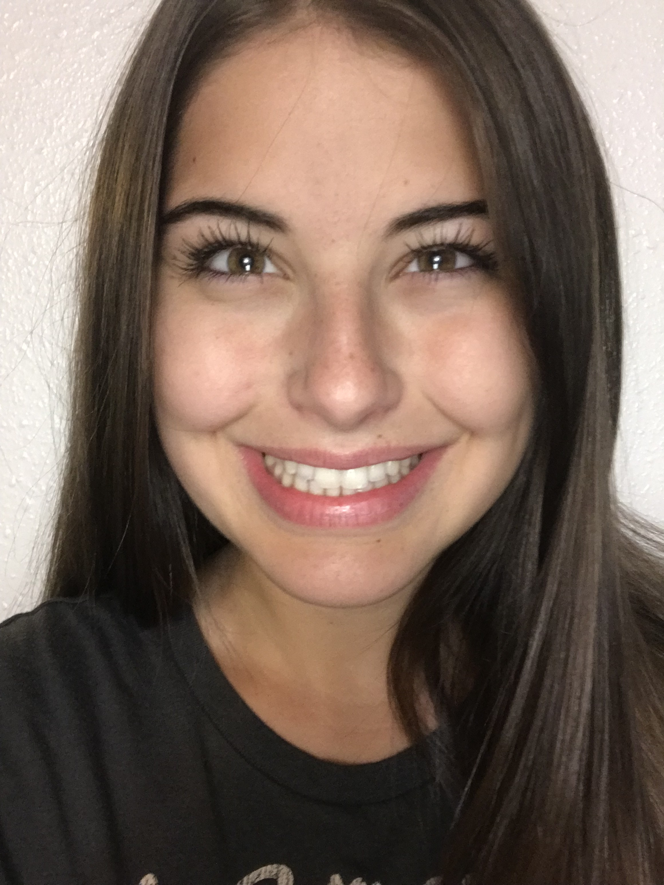

About Me
My name is Ashley Bond and I am a student in CS 160 which is why I am making this portfolio. I hope to build on this portfolio to use as a professional tool I might use to obtain a career in the future. Right now it is fairly bland but I look forward to changing it to fit my skillset over time. I would like to figure out a more efficient way of moving a picture around so if we could cover this in class that would be great. Also this photo isn't professional but it's the best I can do at this time.
